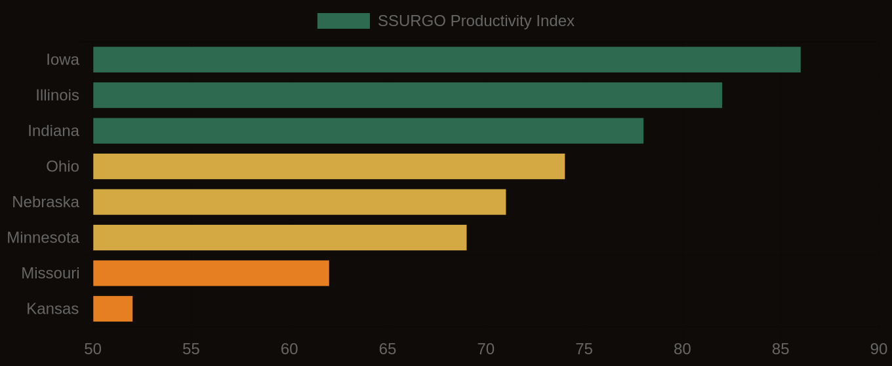

The cost of obtaining a Section 404 wetland permit averages $2.2 million and takes 18 months. High cost. This number represents the cost of regulatory compliance for land development projects that impact jurisdictional wetlands. In these cases, the presence of hydric soils can trigger the need for permits. The associated costs and delays can have significant impacts on project timelines and budgets. For instance, a project may be delayed due to the time it takes to obtain a permit, which can increase costs. A substantial issue. The scale of this issue is substantial, with 109 million acres of hydric soils mapped in the contiguous U.S. This indicates a vast potential wetland footprint that must be considered in land use planning and development. This footprint is not limited to areas with obvious wetland characteristics. Areas with subtle indicators of hydric conditions may also be included, even if these indicators are not immediately apparent.
Hydric soils have specific physical and chemical properties. The key property being measured is the presence of redoximorphic features. These features indicate periodic saturation and reduction. Redoximorphic features are zones of oxidized or reduced iron and manganese. They form in response to changing water tables and oxygen levels. If you put your hand in a soil profile with these features, you might feel a sticky or soggy texture. You might also smell the distinctive odor of anaerobic decomposition. Wet. This process is complex. The formation of these features involves the interaction of soil, water, and microorganisms. Factors such as drainage, topography, and land use influence this process. Soils in low-lying areas or depressions may develop hydric characteristics due to their position in the landscape. Others may develop these characteristics due to inherent properties, such as high water-holding capacity or poor drainage.
What SSURGO Reveals
Some soil orders are more prone to developing hydric characteristics. Histosols and Vertisols are examples. Histosols are soils composed primarily of organic matter. They are often found in areas with high water tables and poor drainage. According to SSURGO data, 31% of all mapped soil components carry a hydric classification. This indicates a widespread presence of these conditions. Hydric soils are common. In certain regions, the concentration of hydric soils is high. Florida, for example, has 28% of its land area mapped as hydric soils. A combination of geologic, climatic, and land-use factors contributes to this concentration. Florida's flat topography, dominated by Flatwoods, Histosols, and Spodosols, creates conditions conducive to the formation of hydric soils. The SSURGO data reflect this pattern. This regional pattern sets the stage for a more detailed analysis of the distribution and characteristics of hydric soils in different parts of the country.
Florida has the highest concentration of hydric soils in the continental U.S., with 28% of its land area mapped as such, due to its flat topography and high water tables. The combination of these factors creates widespread hydric conditions, particularly in soils like the Flatwoods, Histosols, and Spodosols that dominate the state. Louisiana, Texas, and Georgia also have significant areas of hydric soils, driven by their low-lying coastal plains and river deltas. The soil profile in these regions often features redoximorphic features and organic matter accumulation, which persist even after drainage. High risk areas abound. The presence of these hydric soils is closely tied to the underlying geology, such as the Mississippi River Delta's alluvial deposits, which give rise to soil series like the Sharkey clay.
Soil Productivity Index vs. Cash Rent — Corn Belt States
States at Greatest Risk
In contrast, states like Arizona and Nevada have relatively low concentrations of hydric soils, due to their arid climates and well-drained soils. The soil conditions in these regions are often characterized by low organic matter content and limited redoximorphic features, making them less prone to hydric soil formation. However, even in these low-risk states, the national supply chain and regulatory environment can still pose challenges for developers and land managers. For example, a project in Arizona may still require careful consideration of hydric soils if it involves sourcing materials from high-risk areas or complying with federal regulations that govern wetland impacts. The economic and professional consequences of mismanaging hydric soils can be significant, regardless of the local soil conditions, with Section 404 permits costing an average of $2.2 million and taking 18 months to obtain. As such, it is essential for professionals to be aware of the national context and potential risks associated with hydric soils, even if they are not directly working in high-risk areas.
Real estate developers and environmental attorneys need to think about hydric soils when assessing a site and deciding whether to invest. This is key. Without SSURGO data, they may end up with big liabilities. Wetland mitigation costs can range from $100,000 to $1 million per acre. One mistake can be very expensive. The cost of ignoring hydric soils can add up to millions of dollars. Environmental attorneys also need to know about the regulatory implications of hydric soils. If they do not comply with Section 404 permits, they may face big fines and project delays.
Soil Productivity Index — Farmland Investment Map

The Appraisal Gap
In Florida, a 500-acre residential development project went over budget by 25%. The initial budget was $20 million. A $5 million mitigation bill and a 12-month delay were added to the cost. This would not have happened if the developers had used SSURGO data to identify the hydric soils early on. They could have avoided these costs and delays. The project might have been saved from financial trouble. Developers and environmental attorneys can make better decisions by using SSURGO data. They can avoid costly mistakes.
The National Cooperative Soil Survey has mapped and rated hydric soils for decades. The first versions of the SSURGO dataset were made public in the 1990s. This data helps identify probable jurisdictional wetlands at the map unit level. It informs decisions about land use and development. However, only a small percentage of professionals, around 10% of environmental consultants, use SSURGO before making decisions. This is a problem. Real estate developers often do not consider the potential costs of Section 404 permits. They are caught off guard by the time and expense required to obtain these permits. On average, it costs $2.2 million and takes 18 months to secure a permit. This lack of planning can cause serious problems, including delays and cost overruns. No one should be surprised by this.
Millions of acres of land are at risk. The potential impact of ignoring hydric soil data is huge. If 31% of all mapped SSURGO soil components are hydric, the average cost of mistakes is $2.2 million per project. That adds up to tens of billions of dollars nationwide. To put this in perspective, the cost of ignoring hydric soils is similar to the cost of flood insurance claims or repairing infrastructure after a disaster. Developers and investors who do not consider this data are taking a big risk. They may face surprises like regulatory fines, project delays, or permit rejection. The National Cooperative Soil Survey has made this data available for decades. It is time to start using it. Inaction has serious consequences. The data is clear. Ignoring it is too expensive.
Florida has a lot of hydric soils. About 28% of the state is mapped as hydric. In Miami-Dade County, the Krome soil series is dominant. It has a hydric classification and a high potential for wetland formation. A SSURGO query shows the county has over 100,000 acres of hydric soils. These areas may need Section 404 permits. This is important for developers, who may face delays and regulatory hurdles if they do not consider this data. For example, a project in the county was halted due to jurisdictional wetlands. The cost overrun was over $1 million. Using SSURGO data could have helped the developer avoid this expense. Professionals can make better decisions with this data. They can avoid surprises and save time and money.
Readers can query the SSURGO database to learn about hydric soils and wetland regulation. They can use Soil Data Access to explore the hydric soil indicator list. A query takes less than a minute. The result is a list of map units with hydric soil ratings. This helps users identify areas that may be subject to wetland regulation. Lab10yr.com has an interactive map showing hydric soil distribution across the contiguous US. It focuses on areas that may trigger Section 404 permits. Users can start exploring in 30 seconds. This is a valuable resource. It can help professionals work more efficiently.
The data shows that 31% of all mapped SSURGO soil components carry a hydric classification, indicating a significant potential for wetland regulation. This week, readers can take a concrete action by querying the SSURGO database or spending 10 minutes on lab10yr.com to identify potential wetland areas on their properties or areas of interest. By doing so, readers can gain valuable insights into the potential risks and costs associated with wetland regulation, and make informed decisions about their land use plans. The National Cooperative Soil Survey has made this data available, and lab10yr.com has made it accessible.com, or support this work at ko-fi.com/lab10yr.